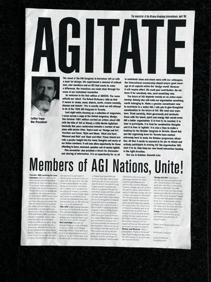

1998
×

We visited a delightful local paper-maker’s. Some people hired a car and drove to Paestum, where they spent an enjoyable afternoon at the ancient temple ruins and on the winding coastal road.One evening was spent at sea. The fishermen took us to their far-off fishing grounds where, by the light of the moon, they cooked fish and chips on board, which we washed down with the local wine. The customary AGI official photo was taken on the high steps of Amalfi Cathedral. The following year, the AGI took a sabbatical from its series of congresses. For contemplation, perhaps?More sadness: within the space of six months, we lost a number of prominent AGI members: Jock Kinneir, Roberto Sambonet, Bradbury Thompson, Walter Herdeg. Gérard Miedinger, Roman Cieslewicz and Kurt Wirth. There was a worthy commemoration in the AGI Letter 5/6.In 1997, it was Europe again: AGI in Barcelona. Spanish temperament, in the highly capable hands of Javier Mariscal and Pedro ‘Peret’ Torrent. The fabulous city played the major role (although there were criminal touches here and there, as a number of light-fingered locals helped themselves to quite a few things). But what brilliance, what energy and what creativity we were treated to. The welcome dinner was held in a lively restaurant, Hivernacle, on the completely renovated quay. The congress commenced with a presentation on Spanish culture and design. In the evening, we moved to Peret’s big studio. The studio was an almost theatrical revelation, as good as the work he showed. ‘Airs of Spain’ entertained us with live music. The next day was AGI day: the assembly and the presentation of new members. A new board also took up its role: Ken Cato, David Hillman, Jean Robert, Ruedi Rüegg, Laurence Madrelle and Uwe Loesch. These IEC members were allotted their own ‘ministries’.The evening started with ‘The Incredible Magic Bus Tour’. The tour of the city was linked to all kinds of pieces of street theatre, mini operas, fake bullfights and acrobatics. Gaudi received a generous amount of attention, with his Sagrada Familia and the Parc Güell, where we were treated to a surprising concert and fireworks once the sun had made way for the moon. Dinner was on the mountainside.The following morning, Ruedi Baur, George Hardie, Lars Müller and Paula Scher got us to look to the future, ‘Inventing the Next Century’. In the evening, the coach took us to the equally vast Estudio Mariscal, where the young maestro delighted us with his cinematic presentation, ‘The History of Colours’. His often exuberant work bears a very clear signature. The recent AGI acquisitions, Peret and Mariscal, immediately won the hearts of all their colleagues. The farewell party at an industrial site was a whirl of dancing, acrobatics, theatre, lights, fire, music, food and drink: an overwhelming, unforgettable experience for all the senses. Barcelona set some great AGI records. AGI also unveiled its own ‘Oscar’ award, named the ‘Henri’, a typical Peret creation, intended to be awarded annually to members of extraordinary merit. Two were immediately promised in the presence of Henrion’s widow, Marion: one for the co-founder Jacques Nathan Garamond and one for Pieter Brattinga (which I later handed to him in Amsterdam during a private viewing at his Print Gallery).The selection committee for new members in Barcelona (1997) received nominations for no fewer than 80 candidates. Even more astounding is that 50 of them were accepted. If you look at the list of names, it is a qualitatively impressive company (see AGI Letter #9 of September 1997). Surely it can’t be that the 50 from 1997 were flukes? In 1998, too, there were more than 80 candidates and these generated 47 new members. Agitate in March 1999 again demonstrated a solid level of quality.In 1997 seven prominent French designers wrote a very concerned letter in the AGI Letter (#9). They wondered what was left of the ideals and intentions of the AGI founding fathers. ‘The history of design is difficult to write. Has it developed independently from history: fascism/socialism/world war/Cold War/fall of totalitarian socialism/triumph of the international financial capitalism?’ ‘What should be our values as designers today’ and ‘What to do and what to teach?’ We do design to commemorate Hiroshima, to celebrate human rights, to fight child labour and child abuse, to guard against the mistreatment of prisoners, but those are still the proverbial drops in the ocean. We are now 10 years further on and the right answers have still not been given. Certainly, the gap between the insatiable ‘haves’ and the ‘have-nots’ has widened enormously. There would appear to be no suppressing the greed and the urge to flaunt. Some have two-million-Euro cars, pimped up for the same amount again... and some have daily wages of something like $1 or less. The themes of AGI Toronto 1998 were ‘Confrontation, Collaboration and Congregation’, with the emphasis on the first. A city of 4.5 million people, dubbed by Peter Ustinov ‘New York run by the Swiss’. The welcome reception was in the Design Exchange (DX), a landmark from the 1930s. Readings and discussions were on the agenda for the second day. A mixture of AGI members, other designers, architects, artists, musicians and people from the theatre world. More confrontations and debates on day 3, when an exhibition of Canadian postage stamps by AGI members also opened. A culinary tour and jazz concluded the day. The final AGI day was reserved for the assembly and the dinner dance.
<
>